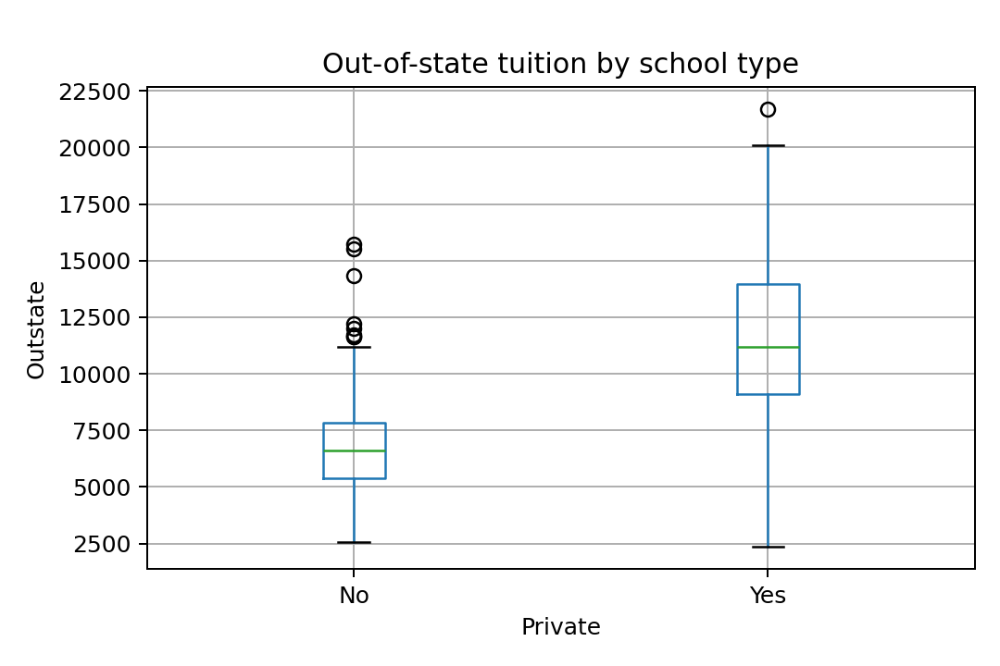

代码 2.4-27 · 第8(e)：公私立学校的州外学费
按Notebook顺序运行。后续代码依赖前面定义的变量。真实数据来自教材官网。
逐步读代码
college.boxplot(column="Outstate",by="Private",ax=ax)把Outstate按Private分组，在指定绘图区画箱线图。- pandas会自动加一个整图标题，
fig.suptitle("")将其清空，避免与自行设置的图区标题重复；ax.set设置自己的标题与纵轴名。 groupby("Private")["Outstate"]先按类别分组，再选择学费；.agg(["count","median"])对每组计算非缺失数量和中位数，打印结果与图形相互核对。- 保存循环生成两种格式，
display显示整图，close释放对象。
实际运行输出
count median
Private
No 212 6609.0
Yes 565 11200.0

下载已执行Notebook · 返回项目目录